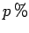
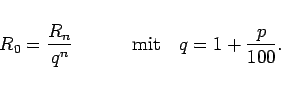
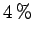

Inhalt Index DeskTop Bronstein

 Arithmetik Finanzmathematik Rentenrechnung Nachschüssig konstante Rente
Arithmetik Finanzmathematik Rentenrechnung Nachschüssig konstante Rente


Die Termine für Zinsberechnung und Rentenzahlung sollen übereinstimmen. Die Verzinsung erfolge mit  Zinseszins, und die Rentenbeträge sollen von der gleichen Höhe R sein. Dann gibt der Rentenendwert Rn an, auf welchen Betrag die regelmäßigen Einzahlungen nach n Zinsperioden angewachsen sind:
Der Rentenbarwert R0 stellt den Betrag dar, der zu Beginn der 1. Zinsperiode (einmalig) eingezahlt werden muß, um nach n Zinsperioden mit Zinseszins auf den Rentenendwert Rn angewachsen zu sein:
|  | (1.89) |
| Beispiel |
|
Von einer Gesellschaft hat jemand 10 Jahre lang jeweils zum Jahresende 5000.-Euro zu beanspruchen. Vor der 1. Zahlung hat die Firma Konkurs angemeldet. Als Forderung an den Konkursverwalter kann nur der Barwert R0 geltend gemacht werden. Bei Zinsen von  pro Jahr gilt: |